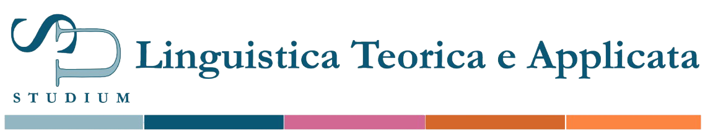

Studium – LTA: Linguistica Teorica e Applicata
Corsi di laurea in Lingue e in Lettere · circa 19.600 esercizi · Accesso con email studenti UniSaPortale di esercizi interattivi di linguistica generale (a scelta multipla, a completamento, a risposta aperta e di trascrizione fonetica e fonematica), dalla fonetica e fonologia alla sintassi e alla semantica, fino alla linguistica storica e alla sociolinguistica. Offre quiz e test per diversi livelli di competenza, risorse didattiche con rimandi alla manualistica e alla bibliografia specialistica, ed esempi di tesi di laurea in linguistica. Realizzato con un progetto PNRR (2023–2026) nell’ambito del Dottorato in Studi letterari, linguistici e storici. Responsabile: Luisa Troncone; responsabile scientifica: Miriam Voghera.
Accedi · Zenodo